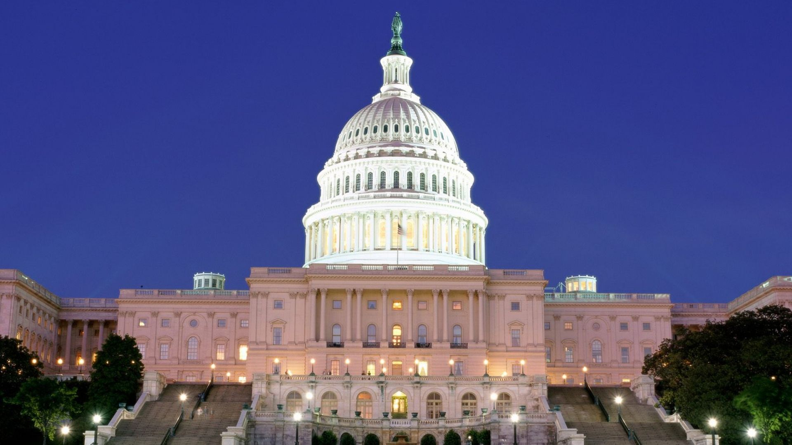

Powers of Congress | ||
| Home | Source | Quiz |
Congress, as a crucial part of the United States government, holds a lot of power and has some important duties. It's basically the lawmaking branch of the government, and it plays a significant role in the American political system. In this section, we'll dive into what Congress does and why it's so important. By understanding its various functions and powers, you'll get a better grasp of how the U.S. government works and how it affects our lives. Congress makes laws, keeps an eye on the government's actions, and represents the people all of which have a big impact on our society and democracy. So, let's explore the ins and outs of Congress and see how it shapes our nation.
The powers held by Congress are diverse and far-reaching, each serving as a cornerstone in the intricate machinery of the U.S. government.
At the heart of Congress's functions lies its legislative power. This is the fundamental ability to create, shape, and pass federal laws. Whether it's issues related to healthcare, taxation, defense, or education, Congress is the primary body responsible for proposing, debating, and enacting legislation that impacts the lives of every American.This power is the very essence of the democratic process, as it enables the people's representatives to translate their constituents' needs and desires into tangible laws and policies.
Congress also wields significant control over the nation's finances. This authority encompasses the ability to authorize the federal budget, impose taxes, and regulate the economy. The financial decisions made by Congress directly impact the government's capacity to fund a vast array of programs and initiatives, reaching into every corner of the nation. By controlling the purse strings of the federal government, Congress ensures that the fiscal aspects of public policy align with the nation's priorities and values.
As part of its oversight role, Congress has the authority to conduct investigations into a broad range of matters, including the operations of the government and actions taken by the executive branch. This power serves as a critical tool to ensure transparency, accountability, and the rule of law in the federal government. By scrutinizing the actions and decisions of government agencies and officials, Congress acts as a safeguard against abuses of power and protects the interests of the American people.
One of the most solemn powers vested in Congress is its authority to declare war. This vital responsibility serves as a crucial check on the executive branch, guaranteeing that the decision to engage in armed conflict is a collective one, involving both the President and Congress. This constitutional provision ensures that the decision to commit American forces to war is not taken lightly, reflecting the founders' intent to prevent unilateral military engagements.
Congress also plays a pivotal role in monitoring and supervising the actions of the executive branch. Through mechanisms like hearings, requests for information, and investigations, it ensures that federal agencies and officials operate within the boundaries of the law and the public interest. This oversight function reinforces the principles of transparency and accountability, holding the government accountable to the people it serves.
It is essential to recognize that the powers of Congress are intricately interwoven with the Executive and Judicial branches of the government, forming a system of checks and balances. This system acts as a safeguard against the concentration of power in any one branch, ensuring that the government's structure adheres to the principles of democracy and the rule of law. Through this complex interplay of branches, the American government upholds its commitment to preserving the foundations of a just and democratic society, where no single entity can become excessively powerful at the expense of the others.
